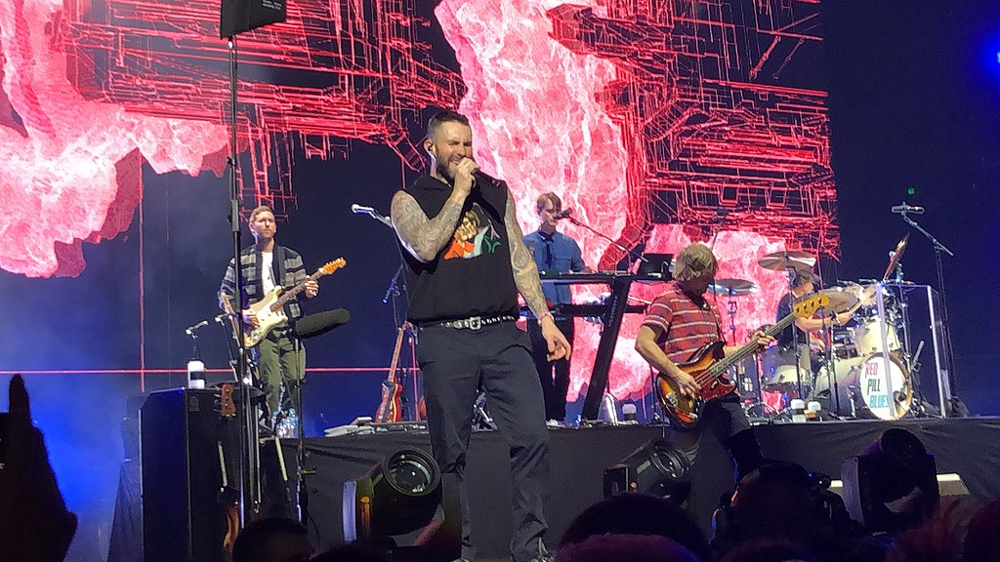

Maroon 5 is an American pop rock band from Los Angeles, California. It currently consists of lead vocalist Adam Levine, keyboardist and rhythm guitarist Jesse Carmichael, lead guitarist James Valentine, drummer Matt Flynn, keyboardist PJ Morton and multi-instrumentalist Sam Farrar. Original members Levine, Carmichael, bassist Mickey Madden, and drummer Ryan Dusick first came together as Kara's Flowers in 1994, while they were still in high school.
After self-releasing their independent album We Like Digging?, the band signed to Reprise Records and released the album The Fourth World in 1997. The album garnered a tepid response, after which the record label dropped the band and the members focused on college. In 2001, the band re-emerged as Maroon 5, pursuing a different direction and adding guitarist Valentine. The band signed with Octone Records, an independent record label with a separate joint venture relationship with J Records and released their debut album Songs About Jane in June 2002. Aided by the singles, "Harder to Breathe", "This Love" and "She Will Be Loved", the album peaked at number six on the Billboard 200 chart, and went quadruple platinum in 2005. In the same year, the band won the Grammy Award for Best New Artist.[5] In 2006, Dusick left the band after suffering from serious wrist and shoulder injuries and was replaced by Matt Flynn